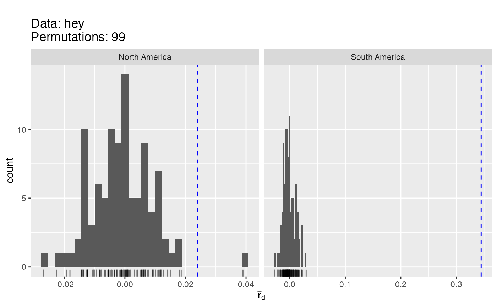
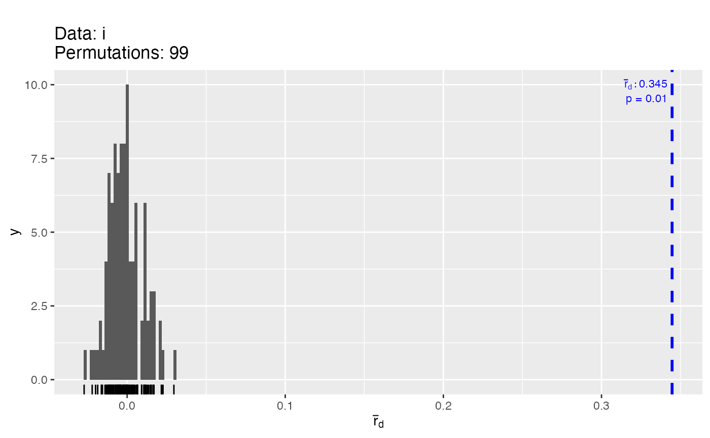
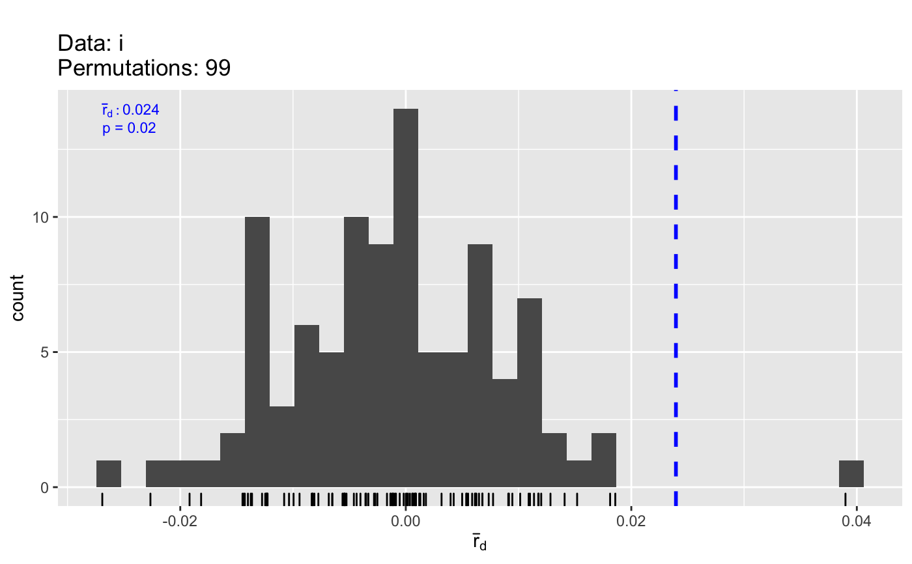

Internal function to plot the results from ia() and poppr()
Source:R/visualizations.r
poppr.plot.RdInternal function to plot the results from ia() and poppr()
Arguments
- sample
either an object of class "ialist" or a list of ialists
- pval
a named vector specifying the p values to display
- pop
The name of the population
- file
The name of the source file
- N
The number of samples in the population
- observed
observed values of Ia and rbarD
- index
The index to plot (defaults to "rbarD")
- labsize
size of the in-plot label
- linesize
size of the in-plot line
Examples
# \dontrun{
data(Pinf)
x <- Pinf %>% seppop() %>% lapply(ia, sample = 99, valuereturn = TRUE, quiet = TRUE, plot = FALSE)
x
#> $`South America`
#> Index
#> Ia p.Ia rbarD p.rD
#> 2.8733344 0.0100000 0.3446431 0.0100000
#> Samples
#> Ia rbarD
#> 1 -0.19840549 -0.019950733
#> 2 0.03917534 0.003954763
#> 3 -0.15476529 -0.015624251
#> 4 -0.05714287 -0.005742415
#> 5 0.05669263 0.005724563
#> 6 0.16824228 0.016989254
#> ...
#> Ia rbarD
#> 94 0.064385660 0.0064568717
#> 95 -0.119014789 -0.0119519903
#> 96 -0.002660131 -0.0002678349
#> 97 -0.093509702 -0.0094239241
#> 98 -0.032672062 -0.0032803542
#> 99 -0.045189509 -0.0045407380
#>
#> $`North America`
#> Index
#> Ia p.Ia rbarD p.rD
#> 0.22260850 0.02000000 0.02395687 0.02000000
#> Samples
#> Ia rbarD
#> 1 0.12627335 0.012831930
#> 2 0.06628103 0.006785674
#> 3 -0.09848652 -0.009952178
#> 4 0.06140446 0.006181698
#> 5 0.06126695 0.006262511
#> 6 0.11656534 0.011779419
#> ...
#> Ia rbarD
#> 94 0.00709140 0.0007143281
#> 95 -0.01644547 -0.0016665396
#> 96 0.01172850 0.0011935324
#> 97 0.03893598 0.0039743077
#> 98 -0.03249290 -0.0033205183
#> 99 -0.17858266 -0.0181508777
#>
poppr:::poppr.plot(sample = x, file = "hey") # plots multiple populations

# plot.ialist takes care of the single populations.
for (i in x){
print(plot(i))
}


# }